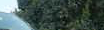
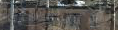
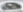

稽核標籤本身
用 DINOv2 嵌入找疑似標錯,不需要模型。
Tier B 前面幾頁靠「模型 vs 你的標籤」找問題。這頁反過來:用 DINOv2 嵌入直接檢查標籤本身對不對 —— 不需要模型。需要 Tier-2 安裝(見 安裝)。
嵌入式標籤稽核
vix diagnose ./dataset --labels voc --audit # 最簡單:一個指令把標籤匯入+嵌入+稽核做完
# 或分步(需先匯入並計算嵌入):
vix import-labels ./dataset --labels voc
vix embed
vix audit-labels --top 20 # 列出最可疑的標籤先決條件:
audit-labels/near-dup-labels 需要工作區裡已有「匯入的標籤 + DINOv2 嵌入」。直接用 vix diagnose --audit 會一次幫你做完,新手建議走這條。原理:把每個框的影像嵌入到 DINOv2 空間,看它的最近鄰多半是別類 → 疑似標錯(given → suggested(disagree=…))。下圖是一個植入錯誤的示範資料集,離群點一眼可見:



完整離群圖庫見 DINO_LABELAUDIT.html。
因果確定的標錯:near-dup-labels
vix near-dup-labels找出幾乎一模一樣的影像卻帶矛盾標籤的群組。這是「至少有一個一定錯」的鐵證(不是 proxy),最適合優先處理。
誠實防火牆(重要)
當參照是你未覆核的匯入標籤時,VIX 不會直接判「label_noise(你的標籤是雜訊)」—— 那等於用受審的標籤定罪自己(循環論證)。它只會給 label_audit_needed:「先人工覆核這些標籤」。可分性這種「在嵌入空間分不分得開」的幾何陳述照常顯示(它不主張誰對誰錯)。
離線品質提醒:
--adapter memory 的像素 fallback 嵌入不適合稽核;標籤稽核請用真正的 DINOv2(Tier-2)。第一次使用 DINOv2 會下載一次權重。